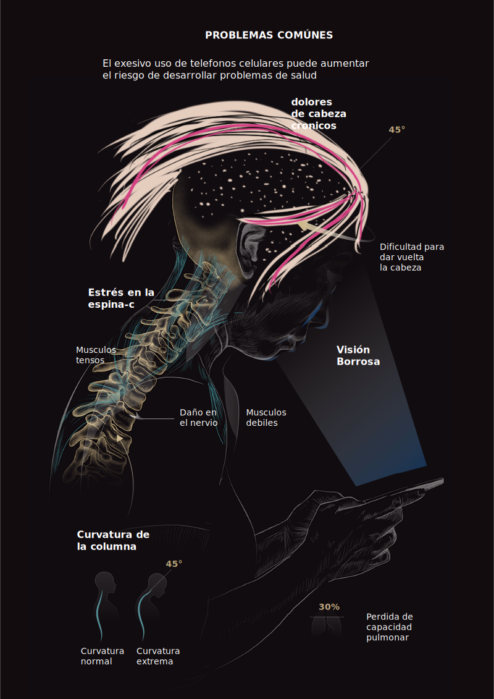

NOMBRE APELLIDO
JANUARY 25, 2019
El dolor de cuello, la sensación de pesadez en los hombros o las molestias en la zona lumbar son síntomas comunes para la mayor parte de la población. En España, los problemas de espalda provocan cerca del 25 % de las bajas laborales al año, lo que supone pérdidas de unos 62 mil millones de euros. Cada vez son más las personas que están viendo afectadas sus cervicales y los músculos circundantes. ¿La razón? La mala posición que mantenemos mientras estamos utilizando un smartphone. La carga del cuello mientras escribimos puede llegar hasta los 27 kg y provocar daños cervicales severos. Es lo que se conoce como síndrome del cuello roto o “text neck”.
En España se calcula que hay 53,4 millones de líneas móviles. En el mundo 5.000 millones. Los datos del estudio de la Sociedad Digital de la Fundación Telefónica dicen que en el país hay 114 líneas por cada 100 habitantes. El informe detecta la adaptación progresiva de la tecnología a la vida, cada vez más común y accesible.
El uso del móvil se ha convertido en algo esencial, con la mensajería instantánea como canal de comunicación principal: un 95,1 % lo prefieren para comunicarse mientras que un 86,6 % también busca la comunicación en persona. La Asociación GSM estima que dos tercios de la población posee un móvil. En enero de 2018, al menos lo tenía un 68 % y para 2020 se espera que este número alcance el 75 %.
Recommendations
Al comunicarse, las personas suelen inclinar el cuello hacia adelante unos 45 grados para enviar mensajes de texto. Esta inclinación provoca una carga de 22 kg en la columna vertebral, ligamentos cervicales y otros músculos, cinco veces la presión normal que deberíamos soportar, según un estudio de Surgical Technology International. A lo largo de un año, esta carga representa una presión adicional de 1.000 a 1.400 horas en la columna del usuario medio de teléfonos inteligentes.